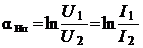
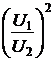

Входное и выходное напряжения (токи) четырёхполюсника на различных частотах отличаются друг от друга на несколько порядков, поэтому их отношение выражают в логарифмических единицах: в неперах (Нп) или децибелах (дБ).
Как отмечалось, для симметричного четырёхполюсника
.
Постоянной ослабления в 1 Hп обладает ЧП, у которого при согласованной нагрузке напряжение (ток) на выходе U2 (I2) в е ≈ 2,72 раза меньше, чем напряжение (ток) U1 (I1) на входе, а полная мощность S2 на выходе при α = 1 Нп меньше входной S1 в 7,39 раз. Действительно, при α = ln(U1/U2) = 1 Нп
при α = 2 Нп при α = 3 Нп и т. д.
На практике постоянную ослабления α выражают также в децибелах (дБ). Определим эту единицу. Единица 1 бел (1 Б) характеризует ослабление мощности сигнала, прошедшего через ЧП, в 10 раз, т.е. αБ = lg(S1/S2)[Б]. Действительно, при αБ = lg(S1/S2)
= 1 Б, отношение S1/S2 = 10α = 101
= 10; при αБ = 2 Б, S1/S2 = 102 = 100; при αБ = 3 Б, S1/S2= 103 = 1000 и т. д.
Заметим, что 1 бел − крупная единица ослабления сигнала. Поэтому на практике используют более мелкую единицу − децибел (α = 1/10 Б = 1 дБ):
αдБ = 10lg , (2.140)
, (2.140)
а так как входная и выходная мощности , то
αдБ = 10lg = 20lg или
αдБ = 10lg = 20lg. (2.141)
При αдБ = 1 дБ отношение полных мощностей S1/S2 = 10(1/10) = 1,26, а напряжений (токов) U1/U2 = I1/I2 = 10(1/20) = 1,12, т. е. постоянной ослабления αдБ в 1 дБ обладает ЧП, у которого при согласованной нагрузке напряжение на выходе в 1,12 раз меньше, чем напряжение на входе, а мощность соответственно меньше в 1,26 раз. В частности, при
отношении мощностей S1S2 ≈ 2 (на границах полосы пропускания
сигнала) постоянная ослабления αдБ ≈ 3 дБ. Если U1 больше U2 в 10 раз, то ослабление равно 20 дБ, если U1/U2 = 100, то постоянная ослабления αдБ = 40 дБ и т. д.
Запишем соотношения между неперами и децибелами:
1 Hп ≈ 8,68 дБ, 1 дБ ≈ 0,115 Нп. (2.142)